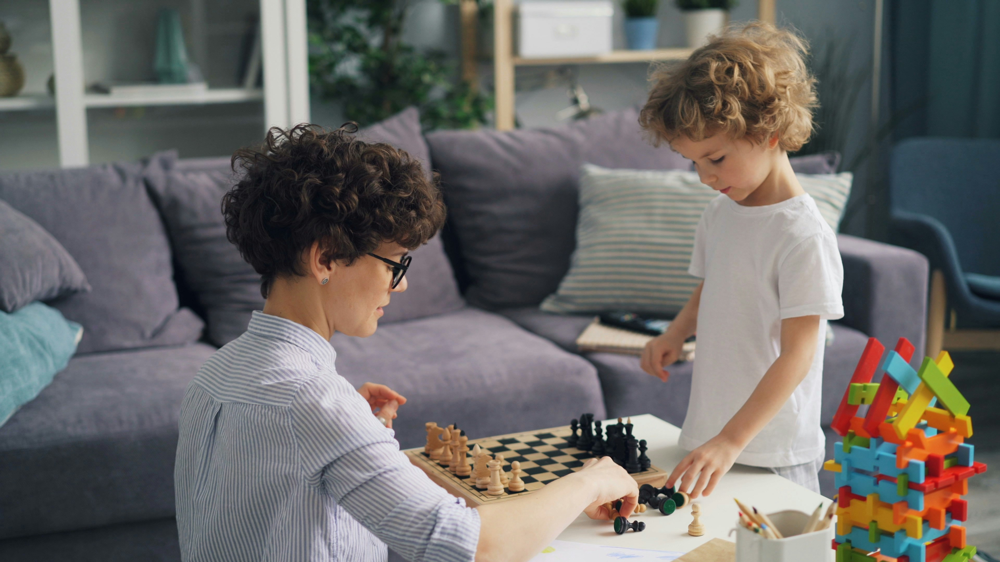
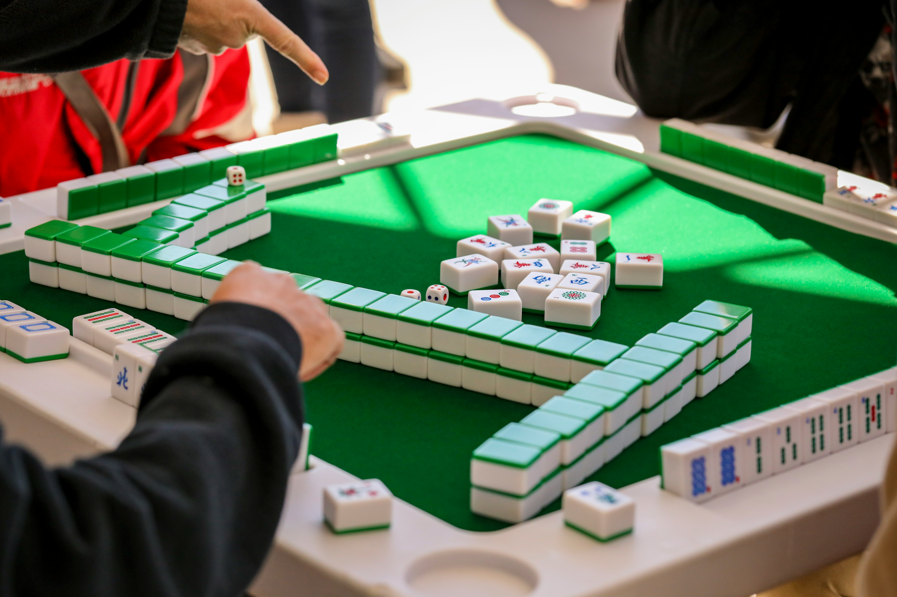
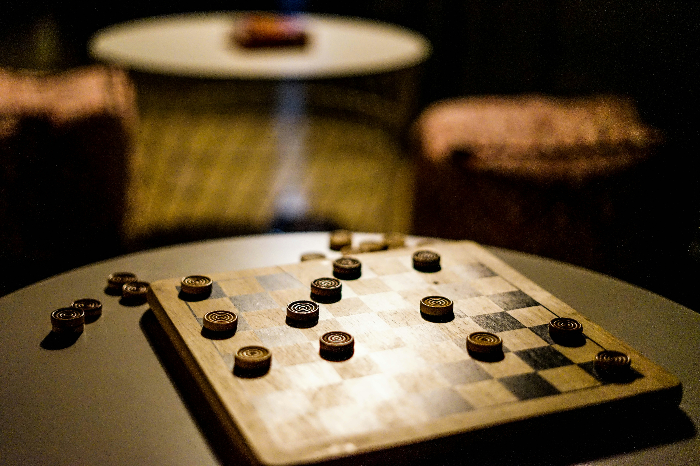
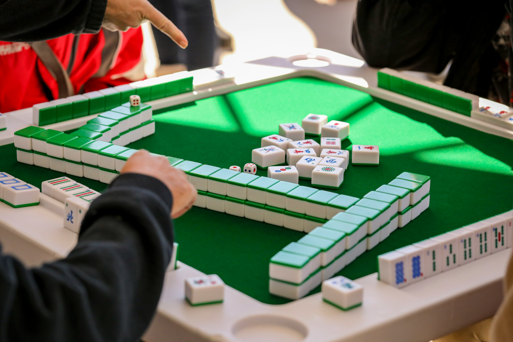
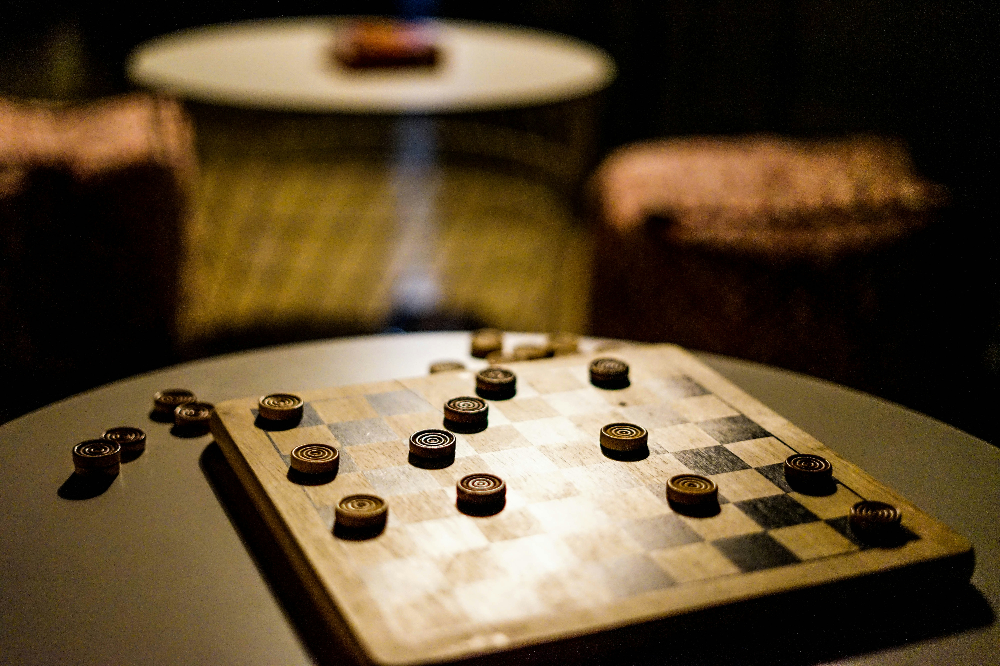
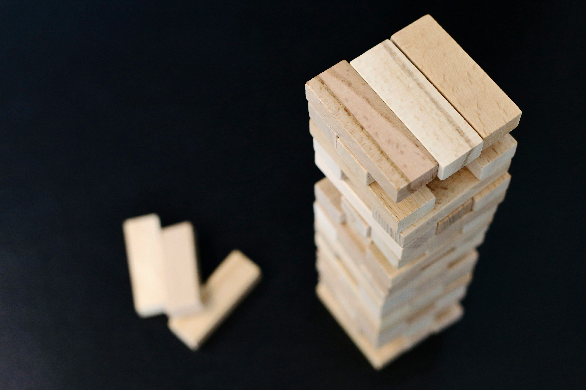
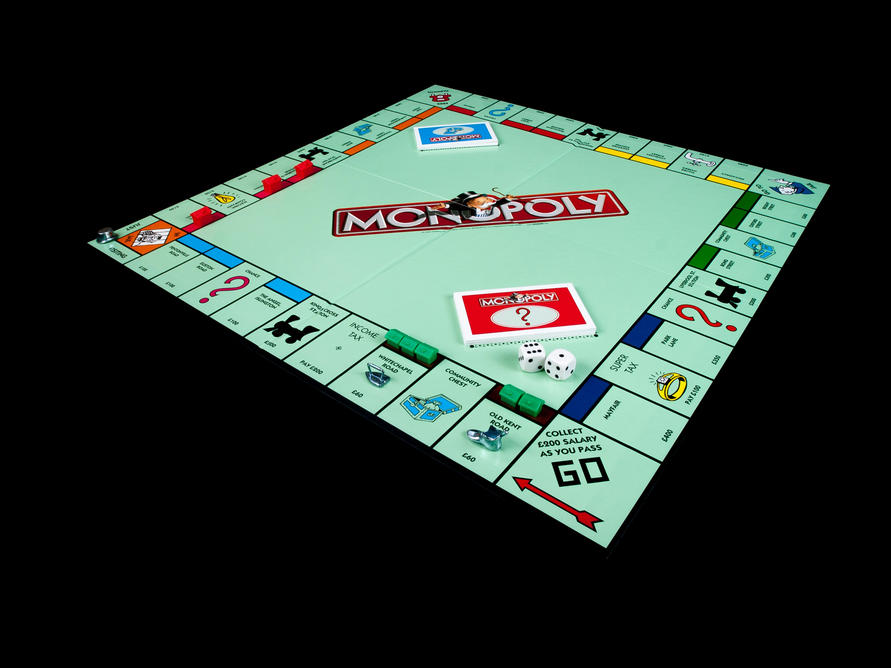
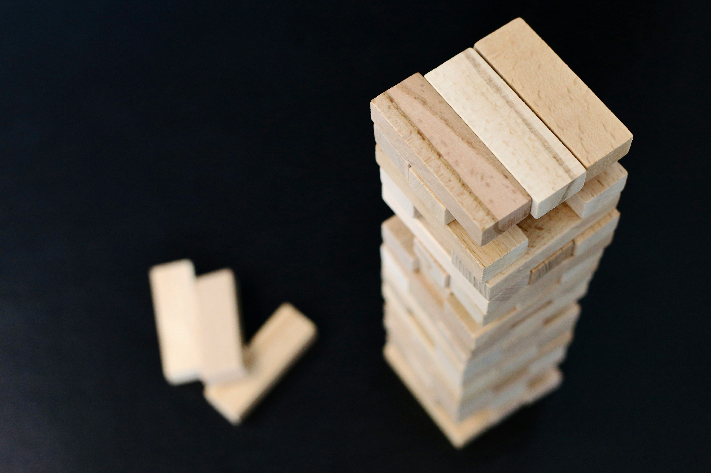
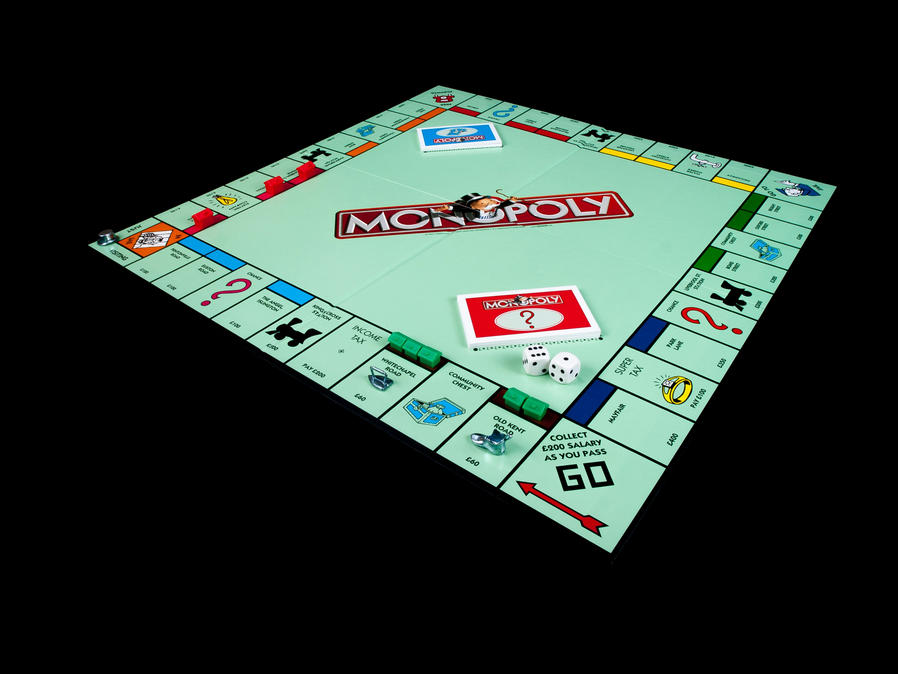

Overview
Purpose
[The purpose of the website is to promote board games.]
Audience
[The audience consists of all people who like to play board games and want to learn about different board games]
Dynamic elements
[JavaScript will provide the information about different board games. That information will be stored in an array of objects. It will be output by JavaScript with the help of an array method and DOM interaction]
Branding
Website Logo
Style Guide
Color Palette
Palette URL: https://coolors.co/3a5694-f8ff24-e03b08-381d2a-01ec1c| Primary | Secondary | Accent 1 | Accent 2 | Accent 3 |
|---|---|---|---|---|
| [#3A5694] | [#FFFFFF] | [#F8FF24] | [#381D2A] | [#01EC1C] |
Typography
Heading Font: ['Times New Roman', Georgia]
Paragraph Font: [Arial, Verdana]
Normal paragraph example
Chess is a strategic board game played on an 8×8 grid between two players, each controlling 16 pieces: a king, queen, two rooks, two bishops, two knights, and eight pawns. The goal is to checkmate the opponent’s king, meaning it is under attack with no escape. Players take turns moving pieces according to their unique movement rules—rooks move straight, bishops diagonally, knights in an L-shape, the queen in any direction, and pawns forward (capturing diagonally). Special moves like castling, en passant, and pawn promotion add depth to the game. A match can end in checkmate, resignation, or a draw due to a stalemate or insufficient material. Strategy, tactics, and foresight are key to mastering chess..
Colored paragraph example
Checkers is a two-player strategy game played on an 8×8 board, where each player starts with 12 pieces placed on the dark squares of their side. Players take turns moving their pieces diagonally forward, capturing an opponent’s piece by jumping over it. If a piece reaches the opponent’s back row, it is "kinged" and gains the ability to move both forward and backward. The game continues until one player captures all of the opponent’s pieces or blocks them from making a legal move, resulting in a win. If neither player can force a win, the game can end in a draw.
Navigation
Content
Home page
Content for the Home page
Text
[Board games are tabletop games that involve players moving pieces according to a set of rules, typically on a pre-marked surface or board. They can be strategy-based, like chess and checkers, luck-based, like Snakes and Ladders, or a mix of both, like Monopoly. Some games focus on competition, where players try to outscore or eliminate opponents, while others encourage cooperation, like Pandemic. Board games vary in complexity, from simple family-friendly games to deep strategic ones requiring careful planning. They offer entertainment, social interaction, and cognitive challenges, making them popular across all ages.]
Images
[Page 2]
Content for the Page 2
Text
[It will have a list of games with game names, images, description, the number of players, link to the page on Wikipidia with this game, some tags about this game.]
Images

 



 



Wireframes
Create two wireframes for your site. One for each page and list them here
Home
[Any additional details about home that the wireframe does not make clear]
[Page 2]
[Any additional details about page 2 that the wireframe does not make clear]